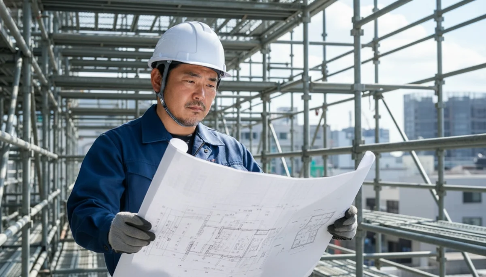
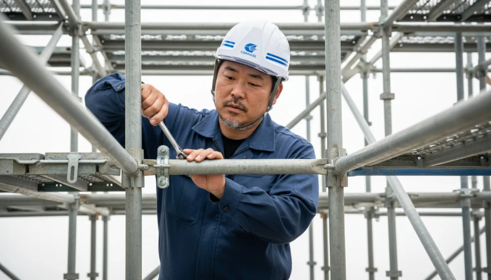
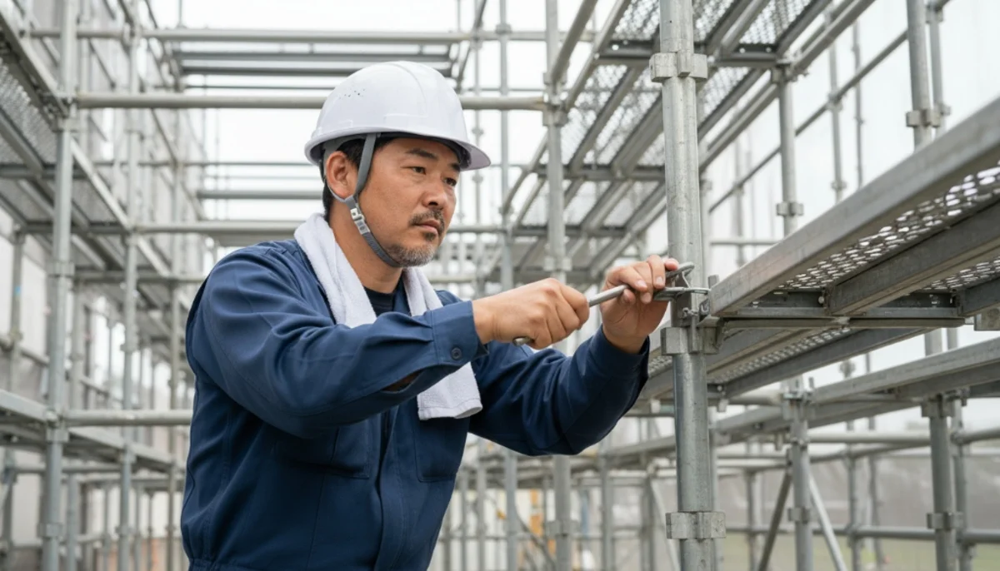

INTERVIEW
社員の声
「自分の命を、自分で守らなくていい会社。」
フルハーネス支給。安全第一なのが嬉しい。
入社前、どんなことで悩んでいましたか？
10年以上、別の鳶の会社で働いていました。そこはいわゆる昔ながらの「日給制」で、雨が降れば休みになり、給料が月に数万円も吹き飛ぶ不安定な生活でした。現場の規模も小さく、仕事自体は好きでしたが、子供が大きくなるにつれて「学費や家のローンは払っていけるのか」という強い焦りがありました。
なにより、命に関わる安全帯や、夏の猛暑をしのぐ空調服すら「自分の命は自分で守れ、文句言うな」と数万円の自腹を切らされる環境に、腹立たしさと業界への限界を感じていました。
蒼翔に応募する際、不安だったことは？
「完全月給制」「装備はすべて会社支給」と求人に書かれていましたが、これまでの業界の常識からすると信じられませんでした。「どうせ入社してから天引きされるんだろうな」とか、「休んだらその分ペナルティがある給料体系なんじゃないか」と、めちゃくちゃ疑っていましたね（笑）。

入社の「決め手」は何でしたか？
面接で社長に会った時、開口一番に「これまでの苦労、よくわかるよ」と言ってくれたんです。社長自身が現場の理不尽さを変えたいと強く思っていて、会社の利益をすべて職人の安全装備とシステム化（iPad支給など）に投資していると聞き、衝撃を受けました。
実際に倉庫を見せてもらうと、全員分の新品のフルハーネスや最新の電動工具がズラリと並んでいて。「この会社は本当に職人を大切にしてくれる」と確信し、その場で転職を決めました。

今、どんなやりがいを感じていますか？
月給制になったことで生活の不安が消え、子供を私立の中学校に通わせるメドも立ちました。「雨だから給料が減る」と嫁がピリピリすることも無くなりました（笑）。
今はベテランとして若手をまとめる役割ですが、タブレットでサクサクと図面を確認でき、17時ぴったりに仕事が終わるこの環境は、同業の職人に自慢したいくらい最高です。「鳶の仕事は好きだけど、環境がキツい」と思っている同年代にこそ、来てほしいですね。

他の社員インタビューを見る